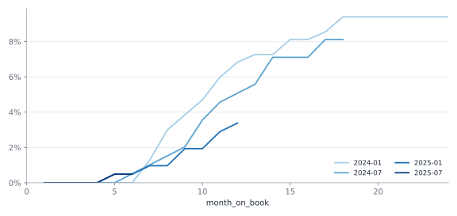

11. IFRS 9 下的贷款组合#
获批的申请变成贷款，贷款机构一直跟踪到它们还清为止。本章按放款月份跟踪贷款如何变坏、如何在逾期档之间移动，把这些移动转换为 IFRS 9 所要求的 PD 期限结构、阶段和损失准备，并读取每笔贷款的还款历史； Vintage 与滚动率分析 和 存续期 PD 与预期信用损失 解释了每一步。
贷款组合是 make_loan_panel() 生成的合成面板：2024 年 1 月至 2025 年 12 月发放的 5,000 笔分期贷款，以及它们在 2026 年 1 月之前每个月末的状态。它代表贷款机构发放的贷款；它与前面各章的申请分开模拟，因此本章不需要前面各章的代码。
跟踪各放款批次#
vintage_table() 对每个放款月份和账龄，给出至少逾期过 90 天一次的贷款占比：
>>> import numpy as np
>>> import pandas as pd
>>> from kivi.datasets import make_loan_panel
>>> from kivi.vintage import roll_rates, transition_matrix, vintage_table
>>> panel = make_loan_panel(rng=0)
>>> ever_90 = vintage_table(
... panel["loan_id"], panel["cohort"], panel["month_on_book"], panel["status"] == "90+"
... )
>>> ever_90[[6, 12, 18, 24]].iloc[::6].round(3)
month_on_book 6 12 18 24
cohort
2024-01 0.000 0.068 0.094 0.094
2024-07 0.005 0.051 0.081 NaN
2025-01 0.005 0.034 NaN NaN
2025-07 0.005 NaN NaN NaN

表中各批次的 vintage 曲线：每条曲线止于该批次最新的账龄月。#
每一行跟踪一个批次，且从不下降，因为变坏过的贷款始终计入。批次尚未到达的月份是缺失值，而不是零。
计算滚动率#
转移矩阵统计贷款从一个月末到下一个月末在逾期档之间的移动。把面板的每一行与同一笔贷款一个月后的那一行配对，再把两个状态传给 transition_matrix() 和 roll_rates() ：
>>> later = panel[["loan_id", "month_on_book", "status"]].assign(
... month_on_book=panel["month_on_book"] - 1
... )
>>> pairs = panel.merge(later, on=["loan_id", "month_on_book"], suffixes=("", "_next"))
>>> monthly = transition_matrix(pairs["status"], pairs["status_next"], normalize=True)
>>> roll_rates(pairs["status"], pairs["status_next"]).round(3)
before
current 0.023
1-29 0.295
30-59 0.553
60-89 0.712
Name: roll_rate, dtype: float64
每月有 2.3% 的正常贷款错过一期还款，而逾期 60 到 89 天的贷款中有七成在一个月后达到 90 天以上。
推算 PD#
如果每个月的移动都服从同一个月度矩阵，矩阵的各次幂就给出从每个逾期档出发、在任意期限内到达 90 天以上的概率。 transition_pd() 把 90 天以上设为吸收态并返回这些累计 PD， convert_pd() 再把它们转换为每个月的边际 PD：
>>> from kivi.lifetime import assign_stages, convert_pd, expected_credit_loss
>>> from kivi.lifetime import significant_increase, stage_table, transition_pd
>>> cumulative = transition_pd(monthly, horizons=36)
>>> cumulative[[3, 12, 36]].round(4)
horizon 3 12 36
state
current 0.0000 0.0393 0.1440
1-29 0.1159 0.2420 0.3246
30-59 0.5381 0.6041 0.6472
60-89 0.8635 0.8731 0.8869
90+ 1.0000 1.0000 1.0000
>>> marginal = convert_pd(cumulative, kind="cumulative", to="marginal")
正常贷款需要四个月才能到达 90 天以上，因此前三个月的 PD 为 0；逾期 60 到 89 天的贷款在一年内到达 90 天以上的概率为 87%。
计量预期信用损失#
报告日是面板的最后一个月，即 2026 年 1 月末；账上贷款是此时仍有余额的贷款。每笔贷款取其所在逾期档的边际 PD，报告日之后每个月一列：
>>> book = panel[(panel["month"] == "2026-01") & (panel["balance"] > 0)].set_index("loan_id")
>>> account_pd = marginal.loc[book["status"]].set_axis(book.index)
每个月的风险敞口是贷款预计届时仍欠的余额，按月利率 1% 的等额本息用剩余期数还款； 存续期 PD 与预期信用损失 给出了推导。处于 90 天以上的贷款在报告日已经违约，因此其损失不折现：
>>> remaining = np.maximum(book["term"] - book["month_on_book"], 1).to_numpy()[:, None]
>>> paid = np.minimum(np.arange(36), remaining)
>>> ead = book[["balance"]].to_numpy() * (1.01**remaining - 1.01**paid) / (1.01**remaining - 1)
>>> defaulted = book["status"] == "90+"
>>> rate = np.where(defaulted, 0.0, 0.01)
>>> twelve_month = expected_credit_loss(account_pd, 0.45, ead, rate=rate, horizon=12)
>>> lifetime = expected_credit_loss(account_pd, 0.45, ead, rate=rate)
划分阶段#
自发放以来信用风险显著增加的贷款处于第二阶段，计提整个存续期的 ECL；已违约的贷款处于第三阶段。 significant_increase() 把每笔贷款所在逾期档的 12 个月 PD 与正常贷款的相比较（每笔贷款发放时都是正常的）， assign_stages() 再加上逾期 30 天和 90 天的兜底标准。面板只记录逾期档，因此示例取每档的中点作为逾期天数：
>>> increase = significant_increase(
... cumulative.loc[book["status"], 12].to_numpy(),
... np.full(len(book), cumulative.loc["current", 12]),
... relative=2.0,
... absolute=0.01,
... )
>>> days_past_due = np.array([0, 15, 45, 75, 105])[book["status"].cat.codes]
>>> stage = assign_stages(increase, days_past_due, defaulted)
stage_table() 汇总每个阶段的敞口和损失准备：第一阶段为 12 个月 ECL，第二、三阶段为存续期 ECL：
>>> allowance = np.where(stage == 1, twelve_month, lifetime)
>>> table = stage_table(stage, book["balance"], allowance)
>>> table.round(4)
total exposure exposure_share expected_credit_loss coverage
stage
1 4076 22660955.57 0.9126 219165.5680 0.0097
2 135 739820.77 0.0298 129643.3610 0.1752
3 205 1431123.43 0.0576 644005.5435 0.4500
>>> print(f"{table['expected_credit_loss'].sum() / table['exposure'].sum():.4f}")
0.0400
第一阶段占九成敞口，覆盖率不到 1%；第三阶段是已违约的贷款，覆盖率等于 45% 的 LGD。整个贷款组合的损失准备为其敞口的 4%。
读取还款历史#
上面的阶段划分只看每笔贷款在报告日所在的逾期档，因此贷款一还清欠款就回到第一阶段。许多贷款机构则会让回到正常的贷款在第二阶段停留一段观察期。 panel_features() 从面板中读取每笔贷款的历史：对报告日所在月份之前的每个月份窗口，给出有状态的月数、逾期的月数、最长的连续坏月数和连续好月数、最差状态，以及距最近一个逾期月份的月数。使用 bad="1-29" 时，每个逾期的月末都算作坏月，因为上面任何逾期档都会使贷款处于第二或第三阶段； 时间窗特征 介绍了这些特征：
>>> from kivi.features import panel_features
>>> observations = pd.DataFrame(
... {"loan_id": book.index, "reporting_date": pd.Timestamp("2026-01-31")}, index=book.index
... )
>>> history = panel_features(
... panel, observations, id="loan_id", month="month", status="status",
... observation_time="reporting_date", windows=["6M", "12M"], bad="1-29",
... )
>>> pd.crosstab(stage, history["worst_status_6m"])
worst_status_6m current 1-29 30-59 60-89 90+
stage
1 3558 240 43 9 0
2 54 42 28 7 0
3 0 0 0 14 191
窗口截止于报告日所在的 1 月之前，因此六个月是 2025 年 7 月到 12 月，而 1 月的状态就是阶段划分已经使用的逾期档。第一阶段的贷款中，有 292 笔在其中某个月末逾期，现在又回到正常。2025 年 12 月发放的 230 笔贷款在 1 月之前没有月末状态，因此它们的最差状态缺失，表中不包含它们。
六个月的观察期把这 292 笔贷款留在第二阶段：在报告日之前六个月末中任一月末逾期的贷款，也算作信用风险显著增加：
>>> probation = history["bad_months_6m"].to_numpy() > 0
>>> revised = assign_stages(increase | probation, days_past_due, defaulted)
>>> revised_table = stage_table(revised, book["balance"], np.where(revised == 1, twelve_month, lifetime))
>>> revised_table.round(4)
total exposure exposure_share expected_credit_loss coverage
stage
1 3784 21218424.37 0.8545 205727.2235 0.0097
2 427 2182351.97 0.0879 148631.8793 0.0681
3 205 1431123.43 0.0576 644005.5435 0.4500
>>> print(f"{revised_table['expected_credit_loss'].sum() - table['expected_credit_loss'].sum():.0f}")
5550
这条规则把 140 万的敞口移入第二阶段，但只让损失准备增加 5,550，第二阶段的覆盖率从 17.5% 降到 6.8%。回到正常的贷款现在处于正常状态，因此转移矩阵给它们与其他正常贷款相同的 PD，变化的只是其 ECL 的期限：从 12 个月变为整个存续期。转移矩阵不记得贷款的历史，因此无法判断最近逾期过的贷款是否比从未逾期的贷款风险更高。用历史特征构建的模型可以回答：这些特征就是行为评分卡的变量，本教程的步骤可以像构建申请评分卡那样，从贷款组合构建行为评分卡。
形成闭环#
项目从贷款申请一直走到这些申请所形成贷款的损失准备。投产后，这些步骤循环往复： 投产与监控 中的监控关注申请人和评分卡，本章的 vintage、滚动率和还款历史关注贷款；一旦任何一方发生漂移，项目就带着新的结果回到 数据与样本 的数据。